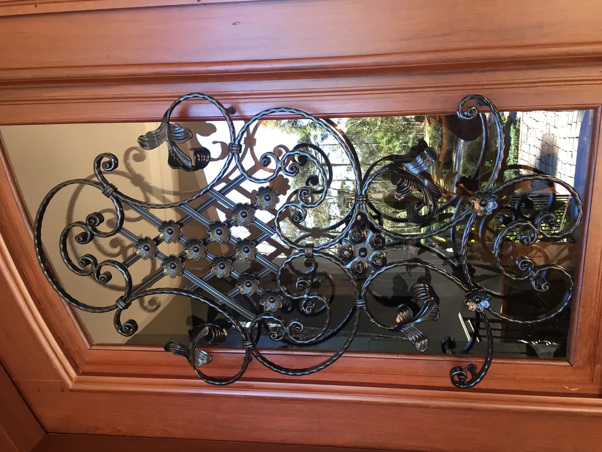
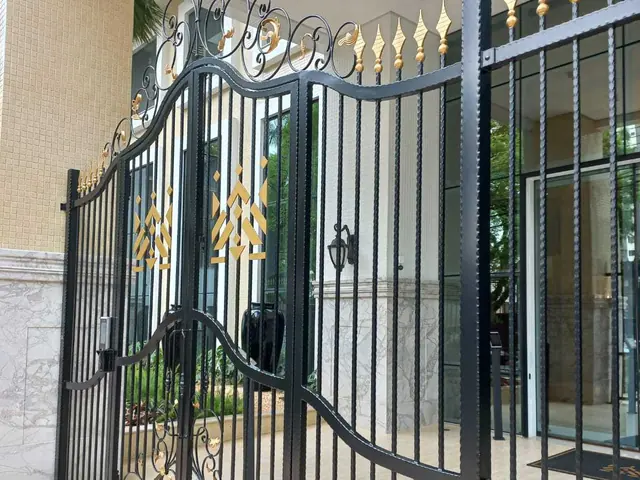
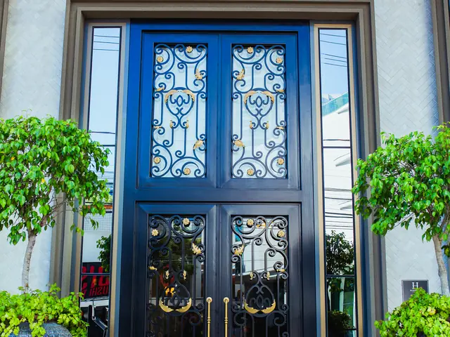
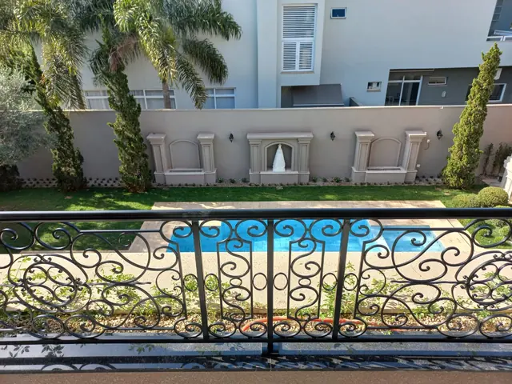
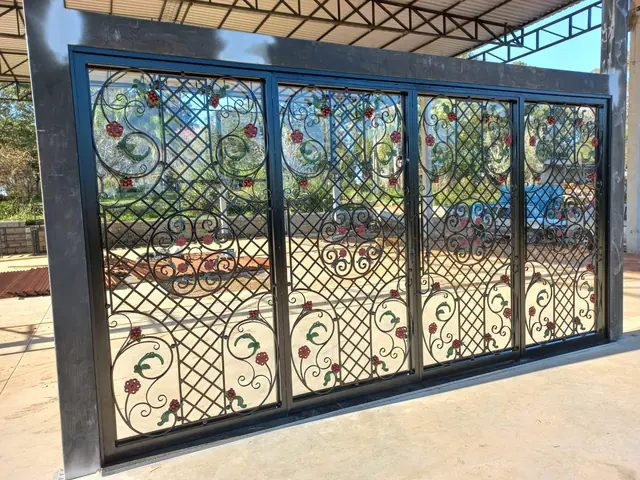

Ferro forjado trabalhado à mão, em Joinville, desde 1988
Portões, grades, guarda-corpos, corrimãos e escadas sob medida, para casas, prédios e indústrias.
Mais de 200 obrasProjeto do cliente ou modelo nosso

O que a Esquadriper faz
Para comércio, residência e indústria. Além dos modelos prontos, fabricamos conforme o projeto do cliente.



Ferro forjado, a nossa paixão
Nossos artesãos transformam o ferro em peças feitas para durar. Cada curva e cada padrão é trabalhado à mão, peça por peça.
Além da paixão pelo ferro forjado, a Esquadriper é conhecida pela serralheria: de estruturas metálicas a portões industriais.


Obras de Joinville a Rondonópolis
Construtoras como Embraed, Pasqualotto e Marluc confiam na Esquadriper.
- 1988
- começo da serralheria
- +200
- obras realizadas
- +30
- produtos e serviços

Magnifique ResidenceMaringá (PR) · Marluc 
Hamptons VillageBalneário Camboriú (SC) · Embraed 
Residência em RondonópolisRondonópolis (MT) 
Laurentia VinhedosBarra do Ribeiro (RS) · Laurentia Vinhedos do Brasil
Do desenho à instalação
A Esquadriper fabrica e instala: o mesmo time cuida da peça do começo ao fim.
Projeto
Um dos nossos modelos ou o projeto do cliente, com desenho exclusivo e sob medida.
Fabricação
Ferro forjado trabalhado à mão, curva por curva. Ferro, inox, alumínio e aço, só material de primeira.
Instalação
Na obra, no prazo combinado.
Pós-venda
O serviço não termina na entrega: suporte e assistência depois.
Também fazemos móveis em aço
Linha de móveis industriais em aço carbono galvanizado com pintura eletrostática: Mesa de Centro, Kit 3 Mesas Formato Sextavado, Mesa Revisteiro e Suporte para Vasos.


Peça seu orçamento
Mande pelo WhatsApp o que precisa, com fotos ou o projeto. Atendemos residências, comércio e indústria.